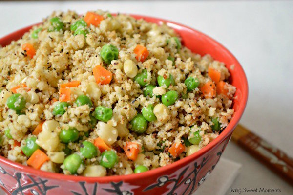

Recipes
Sausage and Parmesan Stuffed Acorn Squash

Ingredients
- 2 acorn squash
- 4 Italian pork sausages
- Salt & pepper, to taste
- Butter
- 1/2 onion, chopped
- 2-3 cloves garlic, minced
- 1/2 tablespoon Worcestershire sauce
- 2 sprigs thyme
- 1.5 cups freshly grated parmesan cheese
Instructions
- Preheat oven to 375F and move the rack to the middle position.
- Cut each acorn squash in half and scoop out the innards. Place them on a baking sheet (face up) and sprinkle with salt & pepper. Place a small piece of butter in each half. Roast for 30 minutes.
- Meanwhile, take the sausages out of their casings, and crumble them into a pan on medium-high heat. Brown for 5-7 minutes and break each piece down further with a spoon as they're cooking.
- Add the onion to the pan and cook for five minutes, stirring occasionally.
- Remove the pan from the heat, and add the garlic, Worcestershire sauce, thyme leaves (remove from stems), parmesan, and more salt/pepper if desired.
- Take the squash out of the oven and fill each half with the sausage mixture. Roast for an additional 30 minutes.
Cauliflower Fried Rice

Ingredients
- 2 tablespoons olive oil
- 2 cloves garlic, minced
- 16 oz chicken breast, cut into cubes
- 1 cup frozen mixed vegetables, thawed
- 1 head cauliflower
- 1 tablespoon fish sauce
- 1 tablespoon soy sauce
- 1/4 teaspoon oyster sauce
- 3 dashes white pepper
- 2 eggs, lightly beaten
- Salt to taste
Instructions
- Rice Cauliflower and set aside.
- Heat up a wok or pan with two tablespoons of olive oil.
- Add the garlic and stir fry until aromatic, followed by chicken and mixed vegetables.
- Stir fry until the chicken is half cooked.
- Add in the riced cauliflower and stir well with the ingredients.
- Add the fish sauce, soy sauce, oyster sauce, white pepper and continue to stir the riced cauliflower for a couple of minutes.
- Using the spatula, push the riced cauliflower to the side of the wok and make a “well” in the middle of the fried riced cauliflower. Pour the beaten eggs in the “well.”
- Wait for 30 seconds and then cover the eggs with the fried riced cauliflower. Leave it for 30 seconds to 1 minute and continue to stir-fry so the eggs form into small pieces and mix well with the fried riced cauliflower.
- Add in salt to taste and do some quick stirs, dish out and serve hot.